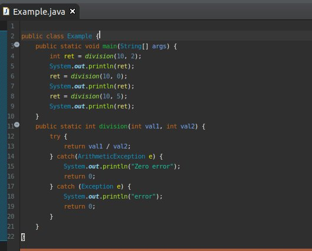
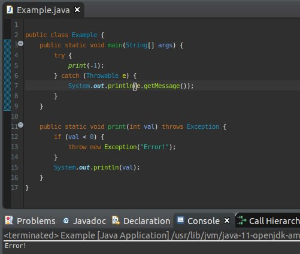
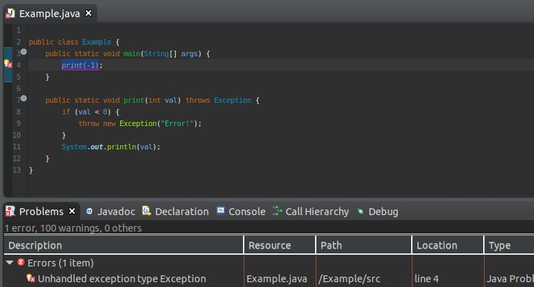
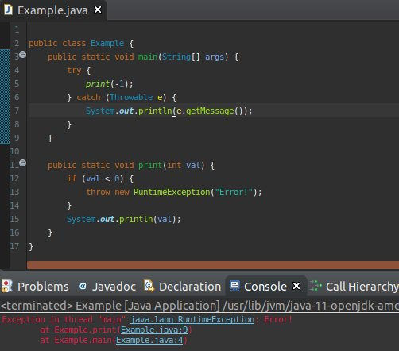
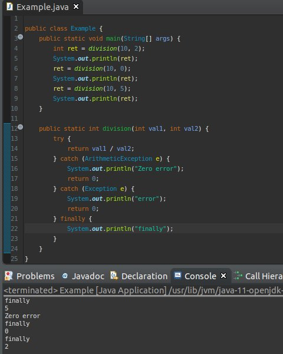

[Java スタディ - 19] 例外処理( try ~ catch)
こんにちは。明月です。
このページには例外処理に関して調べてみました。
例外処理とはプログラムを作成しながら予想できなかった部分を処理することを例外処理といいます。
例えば、除算する関数を作ると考えたら、その関数はパラメータを2つをもらいます。1つめのパラメータは除算する対象、2つめのパラメータは分ける数ですね。
でも、2つめのデータを「0」をもらうとどのようになるかな？
上の例を見れば、「10」から「2」を分けった時には確かに「5」の結果になりますね。
でも、「0」になった時にはコンソールタブで赤い文字でエラーメッセージが出ました。その後で「10」から「5」を分ける構文は実行しなくてシステムが止まりました。
もちろん、「division」関数で「val2」が「0」の場合は「if」を作成してエラーがならないようにできます。今回は簡単なプログラムなので問題ないですが、複雑なプログラムの場合はすべての例外を予想して作成はできないですね。
そのため、例外処理があります。
上の例をみれば、「division」関数で「try ~ catch」構文がありますね。「try」はエラーが発生する可能性がある範囲、「catch」の場合はエラーが発生する時に処理する構文ですね。
上の例は「0」でエラーが発生しましたから、コンソールで「error」を出力して「0」をリターンしますね。
例外処理は「try ~ catch」ですね。そうすると「catch」のキーワードで「Exception」というクラスが宣言しています。その意味はエラー処理別で処理する分岐ですね。

上の例をみれば、「ArithmeticException」の「catch」を作って実行しました。結果は「Zero Error」が出力しました。その意味ではエラー別で分岐して処理ができると意味です。
「Exception」の場合は例外処理の上位クラスなので、「ArithmeticException」の以外のエラーは「Exception」になります。
(※一番上位インタフェースは「Throwable」です。「Throwable」は「RuntimException」と「Exception」になります。「RuntimeException」と「Exception」の差は少し後で説明します。)
そうすると意図的に「Exception」も作ることができます。

上の例をみれば、「print」関数でパラメータが「0」より未満だと「throw」を利用して「Exception」を発生しています。
コンソールをみれば「Error!」というメッセージが出力しました。関数の隣をみると「throws」という予約子のキーワードがあります。
「throws」は関数の中で発生する可能があるエラーを宣言することですね。

その予約子で関数の中で発生するエラーをコンパイル段階でチェックができるので、プログラムの品質が上がるようなキーワードです。
でも、関数が複雑だし、全てのエラーを検出することが大変な時には「RuntimmException」を利用してコンパイルの段階でチェックしないように実行ができます。

そしてすべての関数で「try ~ catch(Throwable)」を掛けて実装するのがいいじゃないと思われますね。「try ~ catch」の場合はインタラプトと関係があるキーワードなので、「try ~ catch」はパフォーマンスがすごく遅いですね。
簡単なプログラムでは認知しないですね。複雑のプログラムだとパフォーマンスがすごく落ちる可能性があるので、戦略的に本当に必要なところで設計して作成するほうが良いと思います。
最後で「finally」のキーワードに関して説明します。(順番がおかしくなったな。。。)

また初めの例に戻りましたが、「finally」のキーワードは「try ~ catch」の実行関係ずに、必ず実行する領域です。
上の例を見れば、「10 / 2」の場合は「5」をリターンしましたが、コンソールをみると「finally」と文言が出力しました。後、「Zero error」が発生した時も結果を「0」をリターンしましたが、「finally」という文言が出力されましたね。
- [Javaスタディ- 52] Java servletでインスタンスを初期する方法2019/10/17 07:15:48
- [Javaスタディ- 51] Spring web frameworkで発生する文字化けのEncoding設定2019/10/16 07:32:55
- [Javaスタディ- 50] Web Spring frameworkでfilter設定2019/10/15 20:12:35
- [Javaスタディ- 49] Web serviceのweb.xmlでエラーページ設定2019/10/14 20:13:44
- [Javaスタディ- 48] JPAのDAOをFactoryパターンで管理する方法2019/10/13 22:55:52
- [Java スタディ - 47] JPAのSpring frameworkで依存性注入する方法2019/10/13 00:40:08
- [Java スタディ - 46] JPAでDAOを生成する方法2019/10/11 07:30:14
- [Java スタディ - 45] JPAでトランザクションの使用方法とオブサーバーパターンで共通トランザクション関数を作り方2019/10/10 07:29:43
- [Java スタディ - 44] JPAのQuery を作り方2019/10/09 07:34:08
- [Java スタディ - 43] JPAのEntityクラス設定(Cascade, fetch)2019/10/08 07:43:33
- [Java スタディ - 42] JPAでpersistance.xml設定とentityクラス設定(@GeneratedValue設定)2019/10/07 07:38:13
- [Java スタディ - 41] EclipseでJPAフレームワーク設定する方法2019/10/04 19:24:43
- [Java スタディ - 40] Web spring frameworkのJSPで使う言語 JSTL - XML2019/10/03 20:02:06
- [Java スタディ - 39] Web spring frameworkのJSPで使う言語 JSTL - 関数、データベース2019/10/02 21:00:22
- [Java スタディ - 38] Web spring frameworkのJSPで使う言語 JSTL - コアー、フォーマッティング2019/10/01 21:48:08
- [CentOS] Vim編集ツールをインストールする方法2019/10/21 00:24:44
- [Linux] Putty使用方法2019/10/20 00:42:54
- [Window] Apacheをインストール方法、サービスに登録する方法。2019/10/18 07:36:51
- [Javaスタディ- 52] Java servletでインスタンスを初期する方法2019/10/17 07:15:48
- [Javaスタディ- 51] Spring web frameworkで発生する文字化けのEncoding設定2019/10/16 07:32:55
- [Javaスタディ- 50] Web Spring frameworkでfilter設定2019/10/15 20:12:35
- [Javaスタディ- 49] Web serviceのweb.xmlでエラーページ設定2019/10/14 20:13:44
- [Javaスタディ- 48] JPAのDAOをFactoryパターンで管理する方法2019/10/13 22:55:52
- [Java スタディ - 47] JPAのSpring frameworkで依存性注入する方法2019/10/13 00:40:08
- [Java スタディ - 46] JPAでDAOを生成する方法2019/10/11 07:30:14
- [Java スタディ - 45] JPAでトランザクションの使用方法とオブサーバーパターンで共通トランザクション関数を作り方2019/10/10 07:29:43
- [Java スタディ - 44] JPAのQuery を作り方2019/10/09 07:34:08
- [Java スタディ - 43] JPAのEntityクラス設定(Cascade, fetch)2019/10/08 07:43:33
- [Java スタディ - 42] JPAでpersistance.xml設定とentityクラス設定(@GeneratedValue設定)2019/10/07 07:38:13
- [Java スタディ - 41] EclipseでJPAフレームワーク設定する方法2019/10/04 19:24:43